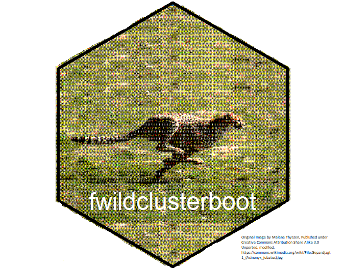

The fwildclusterboot package implements multiple fast wild cluster bootstrap algorithms as developed in Roodman et al (2019) and MacKinnon, Nielsen & Webb (2022).
Via the JuliaConnectoR, fwildclusterboot further ports functionality of WildBootTests.jl - which provides an even faster implementation of the wild cluster bootstrap for OLS and supports the WRE bootstrap for IV and tests of multiple joint hypotheses.
The package’s central function is boottest(). It allows to test univariate hypotheses using a wild cluster bootstrap at extreme speed: via the ‘fast’ algorithm, it is possible to run a wild cluster bootstrap with B = 100.000 iterations in less than a second!

fwildclusterboot supports the following features:
- The wild bootstrap for OLS (Wu 1986).
- The wild cluster bootstrap for OLS (Cameron, Gelbach & Miller 2008, Roodman et al, 2019).
- Multiple new versions of the wild cluster bootstrap as described in MacKinnon, Nielsen & Webb (2022), including the WCR13, WCR31, WCR33, WCU13, WCU31 and WCU33.
- The subcluster bootstrap (MacKinnon and Webb 2018).
- Confidence intervals formed by inverting the test and iteratively searching for bounds.
- Multiway clustering.
- One-way fixed effects.
Additional features are provided through WildBootTests.jl:
- Highly optimized versions of the ‘11’ and ‘31’ wild cluster bootstrap variants
- A highly optimized version of the Wild Restricted Efficient bootstrap (WRE) for IV/2SLS/LIML (Davidson & MacKinnon, 2010).
- Arbitrary and multiple linear hypotheses in the parameters.
fwildclusterboot supports the following models:
- OLS:
lm(from stats),fixest(from fixest),felmfrom (lfe) - IV:
ivreg(from ivreg).
Installation
You can install compiled versions offwildclusterboot from R-universe (compiled) or github by following one of the steps below:
# from r-universe (windows & mac, compiled R > 4.0 required)
install.packages('fwildclusterboot', repos ='https://s3alfisc.r-universe.dev')
# dev version from github
# note: installation requires Rtools
library(devtools)
install_github("s3alfisc/fwildclusterboot")The boottest() function
For a longer introduction to fwildclusterboot, take a look at the vignette.
library(fwildclusterboot)
# set seed via dqset.seed for engine = "R" & Rademacher, Webb & Normal weights
dqrng::dqset.seed(2352342)
# set 'familiar' seed for all other algorithms and weight types
set.seed(23325)
data(voters)
# fit the model via fixest::feols(), lfe::felm() or stats::lm()
lm_fit <- lm(proposition_vote ~ treatment + log_income + as.factor(Q1_immigration) + as.factor(Q2_defense), data = voters)
# bootstrap inference via boottest()
lm_boot <- boottest(lm_fit, clustid = c("group_id1"), B = 9999, param = "treatment", seed = 1)
summary(lm_boot)
#> boottest.lm(object = lm_fit, param = "treatment", B = 9999, clustid = c("group_id1"),
#> seed = 1)
#>
#> Hypothesis: 1*treatment = 0
#> Observations: 300
#> Bootstr. Type: rademacher
#> Clustering: 1-way
#> Confidence Sets: 95%
#> Number of Clusters: 40
#>
#> term estimate statistic p.value conf.low conf.high
#> 1 1*treatment = 0 0.079 3.983 0 0.04 0.118Citation
If you are in R, you can simply run the following command to get the BibTeX citation for fwildclusterboot:
citation("fwildclusterboot")
#>
#> To cite 'fwildclusterboot' in publications use:
#>
#> Fischer & Roodman. (2021). fwildclusterboot: Fast Wild Cluster
#> Bootstrap Inference for Linear Regression Models. Available from
#> https://cran.r-project.org/package=fwildclusterboot.
#>
#> A BibTeX entry for LaTeX users is
#>
#> @Misc{,
#> title = {fwildclusterboot: Fast Wild Cluster Bootstrap Inference for Linear Regression Models (Version 0.12)},
#> author = {Alexander Fischer and David Roodman},
#> year = {2021},
#> url = {https://cran.r-project.org/package=fwildclusterboot},
#> }Alternatively, if you prefer to cite the “Fast & Wild” paper by Roodman et al, it would be great if you mentioned fwildclusterboot in a footnote =) !